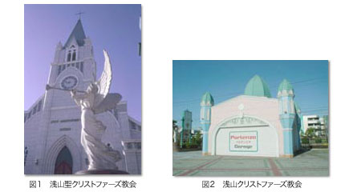
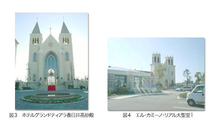
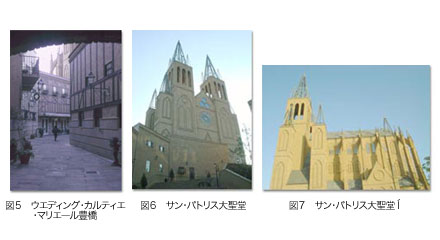
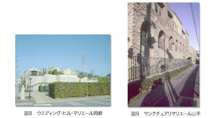
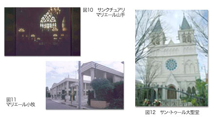
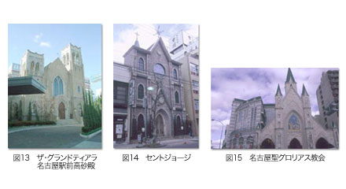
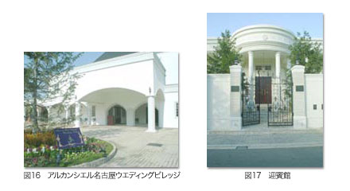

名古屋のグランドツアー
ヨーロッパには、グランドツアーという教養を学ぶための旅行がある。近世のヨーロッパに端を発し、建築の場合、ローマを訪れ、古代の遺跡、ルネサンスやバロックの傑作を詳細に観察した。近代に入ってもっとも有名なグランドツアーを果たした建築家は、ル・コルビュジエだろう。後に２０世紀を代表する建築家となる青年は、イタリア、トルコ、ギリシアなどへの旅を経て、様々な建築を学んでいく。その影響は、晩年にまで及んだ。
そんな大そうな意気込みではないが、われわれも東海近辺の結婚式教会をめぐる小旅行を重ねた。結婚式教会を実際に見てまわることで、情報誌には載らない、あるいは載せられない情報を得ることができると思ったからである。実際、現場に訪れることで、結婚式教会の分析方法や、それに対する考え方の手引きを数多く得た。
印象に残っているのが、郊外型の巨大な結婚式教会を探しにでかけたとき、何もない工業地帯やなだらかな丘陵地に、いきなり大聖堂がそびえ立っていたことだ。それも、かなり遠いところから確認できる。目的の建築そのものがランドマークとなっているという感覚は、建築巡礼のときに見る側を高揚させる。それが稚拙な様式建築もどきであったとしても、そうした気持ちが生まれるのだなと思いながら、シャッターを切った。
ロードサイドの聖地巡礼
名古屋と岐阜を結ぶ国道十九号線沿いには、幾つかの結婚式教会がある。公共交通機関の利用を見込んで考えられたとは思えない。郊外に建設された結婚式教会は、広い敷地を生かして、巨大なチャペルを建設することが多い。特に、名古屋圏は、車が主な移動の足となっているため、それを考慮に入れて郊外に計画されたところがほとんどだろう。また、車からのアプローチは、巨大な大聖堂の存在自体が奇妙なランドマークとなって、式場に向かう参列者の目印にもなる。
さて、十九号線沿いに話を戻すと、名古屋の北西に位置する春日井市に、車でわずか五分ほどの距離に二つの結婚式教会が存在する。
ひとつは「浅山聖クリストファーズ教会」。これは浅山ガーデン出雲殿の所有する結婚式教会であり、単塔のゴシック建築を模して設計されている。だが、ゴシック建築風のシルエットに反して、細部には様々なモチーフが混在していた（図１）。
例えば、建物の中層部をぐるりとめぐり、上下を隔てるコーニスは、古典主義の建築に由来する。塔屋の尖頭アーチのフレームは、ヴェネツィアン・ウィンドウで造型されている。また、コーニスや塔屋のパネル以外の部分に施された鉄製の装飾は、奇妙な植物文様をかたどる。強引な見方をすれば、アールヌーボーといえるかもしれない。さながら西洋建築のパッチワークのようだ。構成材もハイブリットである。正面の扉周辺は、石が張られているが、それ以外の部分は、鉄板にペンキを塗ったもので済ませてしまう。また、グリーンに塗られた屋根の鉄板と、蛇腹の金地との配色は、冠婚葬祭のイメージを色濃く示す。出雲殿は、こうしたデザインを雛形としており、豊田などにもほとんど同じ形式の結婚式教会を所有している。ちなみに、十九号線の浅山クリストファーズ教会の正面には、古典主義の痕跡をわずかにとどめた奇妙な建物が存在している。これは同敷地内にある披露宴会場へと新郎新婦を送迎するための高級外車が格納されるガレージだった（図２）。

そしてもうひとつが「ホテルグランドティアラ春日井高砂殿」。二つの鐘塔をもつ教会の姿は、フランスのゴシック建築をすぐにほうふつさせる（図３）。隣接するホテルからゆとりをもって配置された白いチャペルは、アメリカの建築家ゲーリー・フィリップコーナーの手による設計だという。アメリカでホテルの設計を手がけた建築家らしいが、正直言って、初めて聞いた名前であり、建築の業界ではそれほど知られているとは思えない。ともあれ、素材の使い方や、十九号線から垂直に入って真正面にファサードを構えさせるといった構成は、確かにデザインのあとを見てとれる。面白いのが石の使い方で、正面ファサードは白色のスレートを貼り付けているのに対して、儀式と関係のない側面からはスッパリと安価な素材に切り替えている。また、双塔の奥行きとなる側廊部は、プランの上では縮小されて、ほとんど意味をなさない。ただ、チャペルに到達するまでの庭園の構成は、西洋的な印象を与えるように計画されている。壁を伝うツタのためにコンクリートに細工が施され、チャペル前の空間はピンコロ石が敷き詰められている。
これについても、岡崎に同じ形式のチャペルが存在する。「ザ・グランドティアラＯＫＡＺＡＫＩ高砂殿」の所有する「エル・カミーノ・リアル大聖堂」は、正面に水の流れを持ってくるなど意匠に差異はあるが、外壁材の用い方やチャペル前のピンコロ石など、同じ設計者の手法が見て取れる（図４）。ちなみに、このチャペルは岡崎インターを出てすぐの川原沿いにある。周囲には工場や倉庫がぽつりぽつりとある程度の閑散とした場所であるため、チャペルは孤立しており、かなり唐突な印象を受ける。近所にある「わんわん動物園」と同型のテーマパークに見えてしまうのも無理はない。

マリエールのテーマ空間
郊外に巨大結婚式教会を構えるマリエール・グループは見落とすことができない。この会社は、全国規模で経営を展開しているが、それぞれの結婚式場に対し、単体の教会だけではなく、その周辺環境を含む群としての建築群に対して、明快なモチーフを設定しているからだ。マリエールの社長がそれぞれの空間のテーマを決めて、設計を担当しているアトリエ・ホンマの所員と現地を視察に訪れるという。
例えば、「ウエディング・カルティエ・マリエール豊橋」は、フランスの古都ルーアンをモチーフに露地空間を再現している（図５）。緩やかに湾曲した「まち」空間を囲い、まるで店のように軒を連ねているのは、それぞれウエディングドレスやジュエリーを扱う空間であり、事務所や打ち合わせの部屋だった。本当に結婚式の街である。二層構成の頭上には、おそらくケルン大聖堂をモチーフにした「サン・パトリス大聖堂」が偉容を誇る（図６）。フランスのまちにドイツ風の聖堂が見える様は、やや違和感を覚える。しかし、あくまでモチーフとしてデザインがされているので、全体の統一を崩すほどではない。強いて言うならば、典型的な日本の郊外において、緩やかな丘の上に突如巨大な姿を現した聖堂そのもののほうがよほど違和感がある。大聖堂の真横に電信柱や電線が走っているという風景は、ヨーロッパではまずお目にかかれないだろう。ちなみに、「サン・パトリス大聖堂」では、ヨーロッパからとり寄せたという本物のステンドグラスが売り文句の一つになっている。だが、そのステンドグラスと建物のスケールがあっていないため、両者にズレが生じたり、盲窓を多用するといった事態が発生している（図７）。

「ウエディング・ヒル・マリエール岡崎」は、フランスの南部に位置するプロバンス地方のリゾート地エズ村をテーマとしてつくられた。こちらも岡崎市から少し隔たった丘陵にあって、広大な敷地を保有している。豊橋と同様、入り口付近に聳え立つ大聖堂を横目に敷地の奥に足を踏み入れると、一つのまちが丘の上に形成されている（図８）。もっとも、高圧線のための鉄塔が立っているのは、日本らしい風景だ。ここでは南プロバンスの風景が意識されているため、閉じる構成ではなく、空に向かって開放的に計画されている。また、全体を統括する事務棟は、古典主義のモチーフでデザインされている。入り口で周囲を圧倒する大聖堂は、明確なモチーフに依拠したものではないらしいが、内部は表現主義風のデザインであるのが興味深い。外壁は、泥のようなもので仕上げられ、竣工年数以上の経年を演出している。テーマパークでも使われるエイジングだ。そして瓦や彫刻などところどころに、南フランスを連想させるような要素が挿入されている。

同じくマリエールの「サンクチュアリマリエール山手」は、名古屋の八事にある。ここは都心の近く、高級住宅地近郊であるため、巨大な相貌を呈してはいない。しかし、丘の中腹に挿入された不思議なアーケードが道路からの人目をひく（図９）。
ここのモチーフとなった山岳都市アッシジの聖フランチェスコ修道院に依拠したものだろう。ところどころにおかれた彫像もそれを意図したものと思われる。坂道のある敷地という共通性がないわけではないが、やはり実際のアッシジと似ているわけではない。全体にひっそりとした雰囲気で演出された施設内は、聖堂までの道のりも建物の内部を進んだ先にある。外からはほとんど見ることができない聖堂は、丘の起伏を使って半地下となっているため、予想よりも大きな内部空間を獲得している。パンフレットには「英国で載冠式が行なわれるウェストミンスター寺院をモチーフにしたクラシカルなゴシック大聖堂」と記述されているが、適度に抽象化されたデザインにより、その匂いはかなり抑えられている（図１０）。
マリエールの各式場には、それぞれモチーフとなったまちを記号のように暗示する小物が置かれている。例えば、岡崎では自動ドアのマットにエズ村が描かれ、八事では聖フランチェスコの肖像が絵画や屏風にあしらわれていた。
他にも「マリエール小牧」は、国内最大級の大聖堂をうたい文句にする。ここでは明確なまちのモチーフは存在しないが、聖堂と道一本隔てられた場所にある披露宴会場や事務所などは、リカルド・ボフィルばりの派手な古典主義のデザインになっている（図１１）。ただし、オーダーの誤用も認められる。巨大な「サン・トゥール大聖堂」は、フランスのランス大聖堂をモチーフとしているが、彫刻などの装飾物が省略されているために、さっぱりした印象を覚える（図１２）。東海圏の地方都市としてはランドマークになりえる十分な大きさをもつが、実際のヨーロッパの大聖堂を一度でも見たことがあれば、やはりかなり縮小された印象を受ける。また、プランがかなり寸詰まりで、奥行きがない。鐘楼から飛びでた棒は、ゴシック特有のガーゴイルのようにも見えるが、挙式のときに旗を掲げるために使われるのではないだろうか。
ここは小牧空港の近くであるため、飛行機が頻繁に頭上を行き来していたようだ。きっと上空からも不思議な建築に眼をとめる人も多かったのではないか。ところで、結婚情報誌「けっこんぴあ 東海版」に掲載された「サン・トゥール大聖堂」の写真は奇妙だった。大聖堂と、その脇に付属する古典主義的な建物の庇が一体化したような構図で撮られていたからである。したがって、写真だけを見たとき、ゴシック建築の入り口に古典主義のデザインが合体しているのだと誤解し、大いに驚かされた。

都市型の結婚式教会
名古屋駅周辺の都心部にも、興味深い結婚式教会がある。
新幹線の高架から道を隔てたところにあるチャペルは、小ぶりな姿だが、あえて非対称のファサードをもつ聖堂だ（図１３）。これは「ザ・グランドティアラ名古屋駅前高砂殿」の結婚式教会なのだが、本屋から離れたところにあり、シャトルバスが往復して、二つの場所をつないでいる。敷地に余裕がない都心ならではの建ち方といえよう。ここでも挙式のほかに、写真撮影を行う。見学したときも挙式を控えたカップルが、聖堂内部のステンドグラスや、ファサード中央にある階段において、記念撮影の最中だった。
名古屋駅をはさんだ反対側には「クレール」の「セントジョージ」がある（図１４）。こちらは、結婚式や披露宴を行う本屋から小道一本を挟んだ向かいにたつ小さな教会だ。パンフレットによると、この教会は１８世紀に英国国教会建築家のパレーによってデザインされたものを「ほとんど移築して」つくられたという。にわかには信じがたい情報である。本当だとすれば、建築史の業界でも大ニュースになるはずだ。細かく観察すると、屋根の鉄板仕上げやファサードの石貼りなど、ほとんどが新しい材で構成されていることに気づく。確かに、部分的には時代を経た古材がないわけではない。おそらく、一部にイギリスから運んだ材料を組み込みながら、新築した教会というのが実状だろう。内部空間は、小振りなチャペルらしい密度の空間となっていて、正面に据えられた十字架とその上部のステンドグラス、パイプオルガンが眼を惹く。おそらく十字架の背景となっているニッチの様なものが、移築された部分なのではないだろうか。ともあれ、名古屋駅付近の下町の風景のなかに突如挿入され、軒を連ねる教会の姿は興味深い。結婚情報誌に掲載された写真では、トリミングによって周辺環境を巧妙に外しているが、その美しいイメージを思い描きながら現地を訪れたカップルは、すぐ隣に「めしや」の看板があることを知って驚くに違いない。
「出雲殿マリエ・カリヨン」の所有する「名古屋聖グロリアス教会」も、本屋から離れた場所に建設された教会だ。車で五分ほどの距離にある教会は、大きな交差点の角に建つ（図１５）。ミラノ大聖堂のような三角のシルエットが印象的な教会で、ファサードに穿たれた三つの入り口はそれぞれ、カラオケボックス、教会、駐車場にアクセスしている。入り乱れた機能と、大きな交差点に突如出現する違和感のあるフォルムから、ずっとラブホテルだと思い込んでいたが、実は結婚式教会が入っていたのだ。正面中央のパネルにあしらわれたモザイク画は、中世イタリアを代表する画家ジョットのフレスコ画をモチーフにして、同国のデザイナーに発注して描かれたという。同じく、内部のステンドグラスもイタリアで制作したらしい。その他、床のモザイクタイルの装飾など、調度品に力が入れられていることがうかがえる。ちなみに、教会内のステンドグラスは、直接太陽光を受けて輝くことができないために、背後に照明を仕込む。堂内の天井には、リブ・ヴォールトのパターンを描いているが、全体がきちんと繋がっていないなど、その処理は気になるものだった。

名古屋駅の周辺や繁華街の栄では、結婚式ができるレストランは存在するが、結婚式教会は少ない。そのひとつとして、栄のパルコ屋上には、「名古屋クレイトンホテル」のチャペルが挙げられる。百貨店の屋上に小さな神社を見かけることは多いが、ここでは教会がのっているのだ。屋上部の高い壁に囲われた簡素なチャペルは、特定の建築様式をモチーフにしたものではないが、どことなく古典主義風である。以前、栄を歩いていたとき、パルコの入り口から結婚式姿の団体がぞろぞろと出てきた場面に遭遇したことがある。おそらく披露宴会場へと移るところだったが、周りの人々は屋上の教会の存在を知らないので、何事かといぶかしげにその様子を見ていた。
最近注目されているパークウエディング形式の結婚式場も紹介しよう。
名古屋港のメインロードの裏手では、「アルカンシエル名古屋ウエディングビレッジ」が建設された（図１６）。ここはモナコ大聖堂をモチーフにした結婚式教会「ラ・プラス・ルミエ」のほかに、プライベート・コートをいくつか備えた式場である。フランス館、イタリア館、イギリス館とそれに伴う庭園が、ここの最大のウリだ。もっとも、デザインはかなり荒削りで、様式のいい加減な使い方など、あまり感心できるようなものではない。結婚産業の消費者は、もっと厳しく建築のデザインを見ていくべきだろう。そうでないと、手を抜いた安普請が増えてしまう。パークウエディングのための白い館は、他にも白壁や八事といった名古屋のセレブ的なイメージをもつ場所に存在している（図１７）。ほぼ同型のデザインは、神領や大阪でも見かけた。東海圏だと、豊田でも幾つか建設しているらしい。今後、こうしたパーク・ウエディングの空間は増えていくと思われる。

メディアとしての建築
結婚情報誌でとりあげられる式場の写真は、とても映りがよい。まるでお見合い写真だ。しかし、いくらイメージが勝負だといえ、現地を訪れたカップルが、写真と実物の差にあきれてしまうのではないか、というぐらい誇張されている例も少なくない。というより、むしろ多い。むろん、建築をメディア向けに編集し、発信するという考え方は、結婚式教会だけではない。写真が重要な表現手段となったモダニズムは言うまでもなく、自作の図面と解説付きの『建築四書』を刊行した１６世紀の建築家アンドレア・パラディオ以降、建築の世界でもこうした傾向は継続している。ともかく、実際に結婚式教会を見学して、もっとも印象に残ったことは、写真と現物との激しいギャップだった。
最近、中国では結婚写真がにわかに盛んになっているという。式をあげる前のカップルはもちろんのこと、既に結婚している人も、撮影してもらうために足を運んでいる。日本の結婚式では、こうした写真撮影は通例化している。人生の記念を視覚的な思い出として残すためである。出雲大社でも早くから写真館を併設していた。これは既存の宗教施設に撮影の機能を付加したわけだが、結婚式教会では、写真のために建築がつくられるという逆転現象が起きている。結婚式教会は、写真撮影のための舞台装置である。空間的な体験よりも、二次元的な記録として残ることが重要なのだ。ファサードさえ整っていれば、背後や側面は多少おかしくてもかまわない。写真には記録されないのだから。しかし、そうしたイメージに対して、数百万単位で資金を投入するという現実こそが、結婚式教会の増加をもたらした。
ここ数年、ルイ・ヴィトンやプラダなどのブランドが著名な建築家に依頼し、実験的なデザインの店鋪が出現している。建築雑誌だけではなく、『カーサ・ブルータス』などの一般誌が、そうした傾向をとりあげ、大きな話題になっている。結婚情報誌と結婚式教会が共犯関係を結んでいるように、メディアとブランド建築も切り離せない。ブランドは、新聞やテレビなどの大衆的な媒体では宣伝を行わない代わりに、広告として建築に投資しているのではないか。訪れるべき聖地としてのブランド建築。これもメディアとしての建築だろう。もっとも、ブランドの場合、安普請は行わず、まさにブランドのイメージを上げるために建築の力を活用している（テレビのコマーシャルや新聞の全面広告に比べたら、建築の値段は安いのかもしれないが）。しかし、両極にあるとはいえ、ブランド建築も結婚式教会も、やはりメディアが生みだした建築なのだ。
写真撮影：五十嵐太郎
|